Mode d'emploi détaillé – comptabilité de la Loge Bnei Brith (₪)
Adresse : https://comptabb.pythonanywhere.com
Pour : l'administrateur, le trésorier, les membres du bureau et les bénévoles
Ce document est livré avec l'application : Éditions › Mode d'emploi (PDF) ouvre toujours la version à jour.
Version du 27/09/2026
Principe général. Une opération = un mouvement (Mvt) numéroté, équilibré (total des débits = total des crédits).
L'application génère elle-même les écritures à partir de ce que vous saisissez, contrôle tout avant d'enregistrer
et note chaque action dans l'historique. Vous n'avez pas besoin d'être comptable pour saisir.
Où sont les boutons ? Sur chaque page, tous les boutons d'action sont regroupés en haut à gauche, sous le titre,
sur une même ligne qui reste visible quand on fait défiler la page. Il n'y a aucun bouton en bas des pages. Seuls les boutons propres
à une ligne d'un tableau (par exemple « C'est la même » dans Banque) restent sur leur ligne.
Saisir son identifiant ou son adresse e-mail et son mot de passe, puis Se connecter.
Pour quitter : Se déconnecter en haut à droite (surtout sur un ordinateur partagé).
Page de connexion.
Mon compte : identifiant et mot de passe
Cliquer sur son nom, en haut à droite. Chacun peut y changer :
son identifiant de connexion : un nom sans espace, ou son adresse e-mail ;
son adresse e-mail, avec laquelle il peut aussi se connecter ;
son mot de passe (l'ancien est demandé).
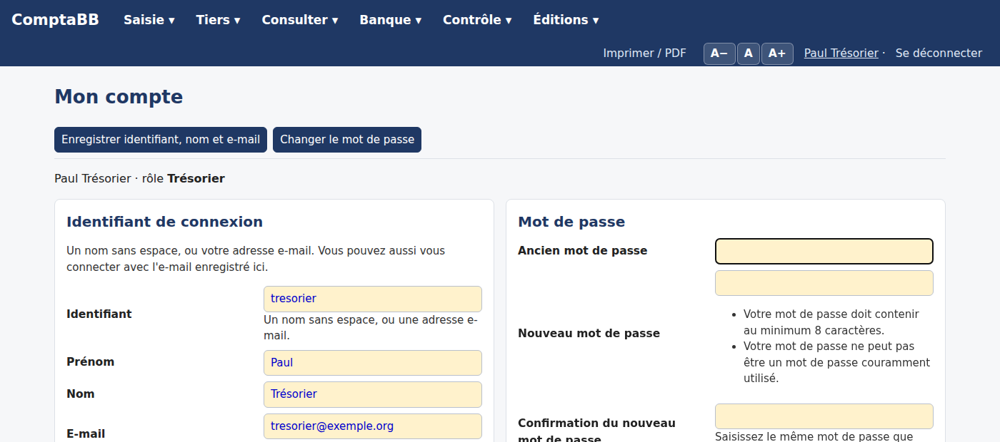
Mon compte : les boutons « Enregistrer l'identifiant » et « Changer le mot de passe » sont en haut.
Icône sur le Bureau
Edge : menu … › Applications › Installer ce site en tant qu'application.
Chrome : menu ⋮ › Caster, enregistrer et partager › Installer la page en tant qu'application.
Téléphone : iPhone (Safari) › Partager › Sur l'écran d'accueil ; Android (Chrome) › ⋮ › Ajouter à l'écran d'accueil.
Taille des caractères
Les boutons A−, A et A+ en haut à droite réduisent, remettent à la normale ou agrandissent toute l'application ;
le réglage est mémorisé sur l'appareil.
Les quatre rôles
Rôle
Ce qu'il peut faire
Administrateur
Tous les droits, dont le paramétrage de base : référentiels (plan comptable, journaux, préfixes, types de tiers,
moyens de paiement, modèles d'opération, natures et modes des fiches, réglages), Paramètres (Excel), Imports / Exports, codes d'axe 1,
paramètres des relevés, utilisateurs, base de données.
Trésorier
Tout sauf le paramétrage de base : saisie, corrections, codes d'axe 2, tiers, fiches bénévoles, banque, budget,
clôture, exports des référentiels.
Bureau
Consultation seulement : tableau de bord, écritures, journaux, états, tiers, banque, contrôles, historique.
Bénévole
La liaison seulement : les fiches bénévoles qui lui sont confiées (saisie des lignes, nouveaux tiers, transmission).
Aucun solde ni écriture.
Il n'y a pas d'autre rôle. L'administrateur crée les comptes dans Administration › Utilisateurs ;
un bénévole se crée dans Saisie › Fiches bénévoles, en le choisissant parmi les membres (chapitre 7).
2. Se repérer dans l'application
Les menus
Tableau de bord, menu « Consulter » ouvert.
Menu
Pages
Saisie
Saisie guidée · Écriture libre · Modifier une écriture · Codes et nouveaux tiers · Fiches bénévoles
Tiers
Liste des tiers · Cotisations des membres · Tiers provisoires
Consulter
Tableau de bord · Écritures · Journaux (banque, caisse…) · Grand livre · Balance · Analytique
Banque
Relevés à passer en compta · Traductions du relevé
Contrôle
Contrôles · Historique
Éditions
États annuels et budget · Clôture de l'exercice · Exports des référentiels · Présentation (PDF) · Mode d'emploi (PDF)
Administration
Utilisateurs · Référentiels · Paramètres (Excel) · Imports / Exports · Base de données (administrateur)
Chacun ne voit que les menus de son rôle. Le menu de la page en cours est souligné.
La barre des boutons
Sous le titre de chaque page, une ligne regroupe tous les boutons de la page (Enregistrer, Créer, Importer, Télécharger en Excel,
Imprimer…). Elle reste en haut de l'écran pendant le défilement : on remplit les cases plus bas, puis on clique en haut. Le bouton principal
est en bleu foncé.
Listes déroulantes « cherchables »
Dans toutes les listes (comptes, tiers, codes, types d'opération…), tapez une partie du code ou du libellé :
« taieb », « 5122 », « bourse ». Choisir avec la souris, ou avec les flèches et Entrée.
Trier et filtrer les tableaux
Clic sur un en-tête de colonne : tri croissant (▲), second clic : décroissant (▼).
« Filtrer ce tableau… » (au-dessus des tableaux de plus de 8 lignes) : ne garde que les lignes contenant le texte tapé.
Couleurs et conventions
Cases de saisie sur fond jaune ; montants négatifs en rouge ; ₪ partout ; dates jj/mm/aaaa.
Messages en haut de page : vert = fait, rouge = refusé (avec la raison), jaune = à vérifier.
3. Saisir une opération (saisie guidée)
Saisie › Saisie guidée. Vous décrivez l'opération ; l'application écrit les lignes comptables.
Cotisation de 400 ₪ réglée par BIT : aperçu des 4 lignes générées, contrôles OK.
Étapes
Date de l'opération (dans l'exercice ouvert).
Type d'opération : l'aide sous la case explique ce qu'il fait.
Tiers (membre ou fournisseur) quand le type en demande un : la liste ne propose que les tiers du bon type.
Montant en ₪ (toujours positif) et moyen de paiement (Mizrahi, BIT, Caisse, ou « Non réglé » pour une facture seule).
Vers (virement interne seulement) : le compte qui reçoit.
Événement / projet (axe 2) : obligatoire.
Compte : seulement si différent de celui du type ; Libellé facultatif ; Remboursement pour une opération inverse.
En haut : Aperçu et contrôles, vérifier les lignes, puis Enregistrer.
Types d'opérations
Type
Écritures
Cotisation, manifestation, recette d'opération, don d'un membre
Facture au membre (411) contre le produit (7xx) ; si un moyen de paiement est choisi, règlement dans le même mouvement.
Règlement d'un membre
Encaissement d'une facture déjà passée.
Don reçu (sans tiers), subvention, intérêts
Banque ou caisse contre le produit.
Dépense directe, frais bancaires
Charge (6xx) contre banque ou caisse.
Facture fournisseur / règlement fournisseur
Charge contre fournisseur (401), puis paiement.
Virement interne
Deux mouvements via le compte 580000 (compte qui paie → 580000 → compte qui reçoit).
Paiement carte Isracard
Charge contre 580000 (journal OD), puis prélèvement 580000 contre la banque.
Contrôles avant enregistrement
Date dans l'exercice ouvert, type choisi, montant positif, tiers du bon type, moyen de paiement si obligatoire, virement vers un autre compte,
code axe 2, compte de la bonne classe, écritures complètes et équilibrées, doublon (même date, libellé et montant : cocher « ce n'est pas un
doublon » si c'est voulu).
4. Écriture libre, modifier une écriture
Ouvrir un mouvement
Cliquer sur un n° Mvt (Écritures, Journaux, Grand livre…). La page montre les lignes, le lettrage, le lien avec le relevé et les commentaires ;
le bouton Modifier est en haut.
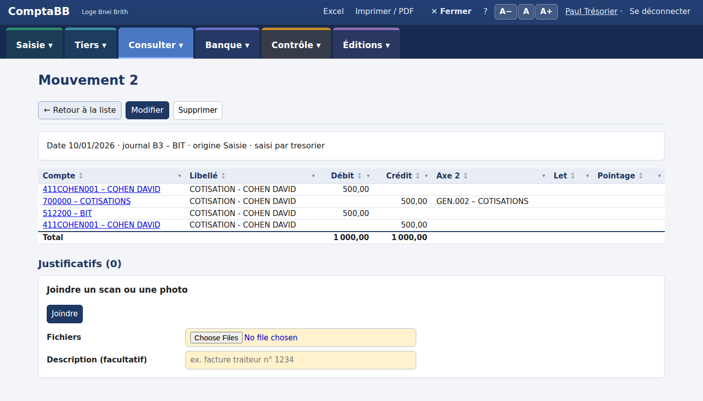
Un mouvement.
Modifier
Saisie › Modifier une écriture : taper le n° de mouvement puis Rappeler l'écriture (ou Modifier sur le mouvement).
Changer comptes, libellés, montants, axe 2, date ou journal ; ajouter une ligne (« + Ajouter une ligne ») ou en supprimer (case Suppr.).
Le total débit / crédit s'affiche en direct : le mouvement doit rester équilibré.
Indiquer le motif (obligatoire), puis Enregistrer en haut.
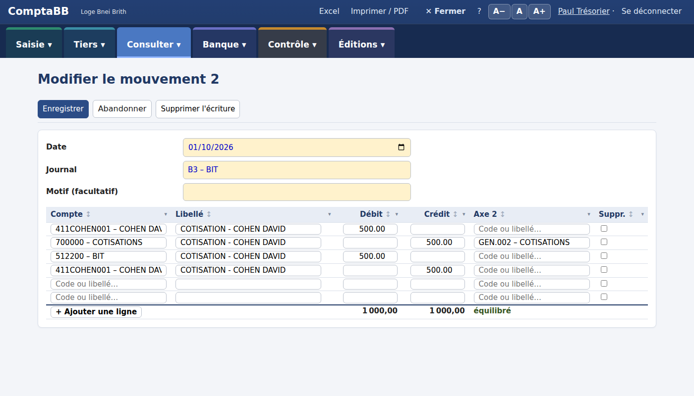
Modification d'un mouvement : totaux en direct, motif obligatoire.
Refusé dans un exercice clos : une erreur d'un exercice clos se corrige par une écriture libre dans l'exercice ouvert.
Une ligne dont le compte ou le montant change est détachée du relevé et délettrée.
Le motif, l'avant et l'après sont gardés dans le mouvement et dans l'Historique.
Écriture libre
Saisie › Écriture libre : saisir un mouvement ligne par ligne (opération diverse, reclassement), avec journal, date et objet.
Mêmes contrôles (équilibre, exercice ouvert).
5. Codes analytiques et nouveaux tiers
Saisie › Codes et nouveaux tiers. Boutons en haut : Créer le code, Créer le tiers, Changer le statut.
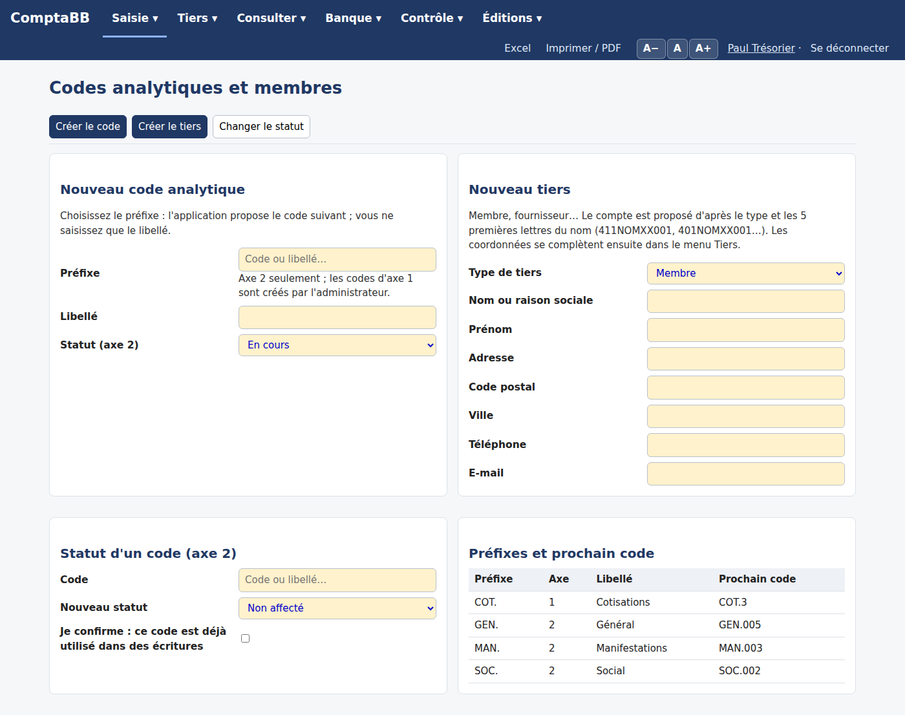
Nouveau code, nouveau tiers, statut d'un code, préfixes.
Nouveau code analytique
Choisir le préfixe (ex. MAN. = manifestations, SOC. = social) : le tableau montre le prochain code.
Saisir seulement le libellé ; le code est attribué automatiquement (ex. MAN.013).
Statut (axe 2) : 0 Non affecté, 1 En cours, 2 Terminé.
Le trésorier crée les codes d'axe 2 (événements, projets) ; les codes d'axe 1 relèvent du paramétrage de base (administrateur).
Nouveau tiers
Choisir le type (Membre, Fournisseur…), le nom, et si possible l'adresse, le code postal, la ville, le téléphone, l'e-mail.
Le compte est proposé d'après le type et le nom : 411COHEN001 pour un membre, 401TRAIT001 pour un fournisseur.
Statut d'un code axe 2
Choisir le code et le nouveau statut ; si le code est déjà utilisé dans des écritures, cocher la confirmation.
Tiers › Liste des tiers : membres, fournisseurs et autres types. Filtrer par type ou statut, rechercher (nom, compte, ville, e-mail).
La colonne Solde indique ce que le tiers doit (positif) ou ce qui lui est dû (négatif). Boutons en haut : Importer Tiers.xlsx,
Modèle Tiers.xlsx, Lettrer automatiquement, Exporter (Excel).
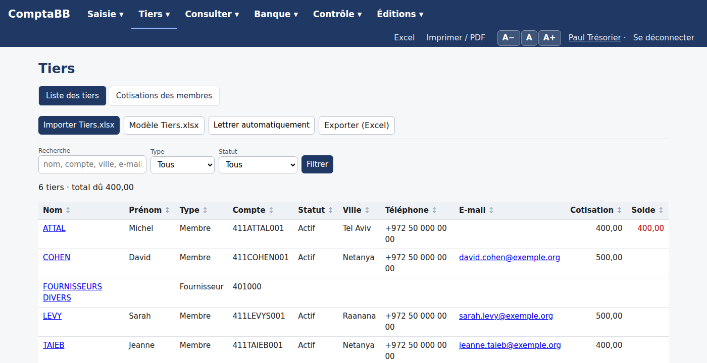
Liste des tiers.
Fiche d'un tiers
Cliquer sur le nom : facturé, réglé, solde dû, historique des écritures. Modifier la fiche : type, coordonnées, adresse ; pour un membre :
statut, date d'adhésion, cotisation attendue ; puis Enregistrer la fiche en haut.
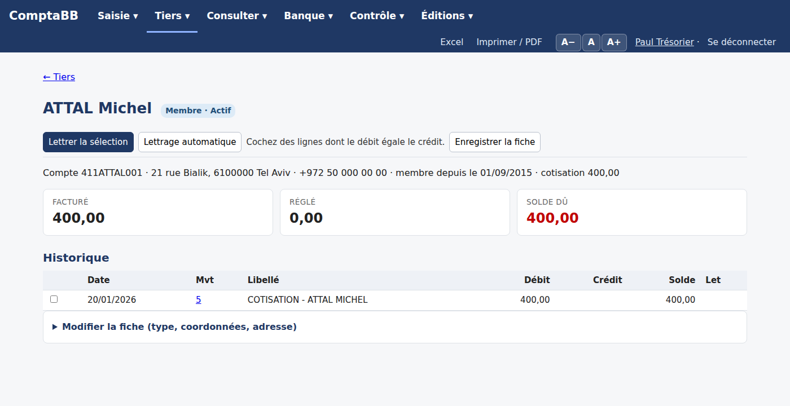
Fiche d'un membre : cotisation facturée, pas encore réglée.
Importer un fichier Tiers.xlsx
Modèle Tiers.xlsx : le remplir, une ligne par tiers. Colonnes : Compte, Type, Nom, Prénom, Adresse, Code postal, Ville, Téléphone,
E-mail, Date d'adhésion, Statut, Cotisation. Seul le Nom est obligatoire.
Choisir le fichier dans « Importer des tiers », puis Importer Tiers.xlsx en haut : un compte rendu indique les tiers créés, mis à jour, et les lignes en erreur.
Un tiers déjà présent (même compte, ou même type + nom + prénom) est mis à jour, jamais en double.
Une cellule vide n'efface rien. Rien n'est supprimé.
Ce que doit un tiers
Pas de suivi séparé des impayés : le solde du compte tiers suffit (colonne Solde de la liste, triable, et fiche du tiers).
Cotisations
Tiers › Cotisations des membres : pour l'exercice choisi, attendues (membres actifs), facturées, reçues, reste dû et taux de recouvrement.
Lettrage
Le lettrage relie une facture et son règlement (même code : A, B…).
Automatique : Lettrer automatiquement (liste des tiers) ou Lettrage automatique (fiche).
Manuel : dans la fiche, cocher des lignes dont le débit égale le crédit, puis Lettrer la sélection en haut. Le × à côté d'une lettre annule ce lettrage.
7. Fiches bénévoles (la liaison)
Les bénévoles notent en ligne les recettes et dépenses d'une activité ; le trésorier complète et reporte en comptabilité.
Le trésorier prépare
Saisie › Fiches bénévoles, carte Nouveau bénévole : choisir le membre dans la liste des fiches tiers
(un bénévole est toujours un membre ; s'il est absent, créer d'abord sa fiche, type Membre), puis identifiant (nom ou e-mail) et mot de passe ;
Créer le bénévole en haut.
Carte Nouvelle fiche : type Activité ou Gestion (dons et aides reçus ou versés), titre, bénévoles. Pour une activité, le
code axe 2 se choisit dans la liste, ou se crée sur place : indiquer le préfixe et le libellé, le numéro est attribué automatiquement.
Créer la fiche en haut.
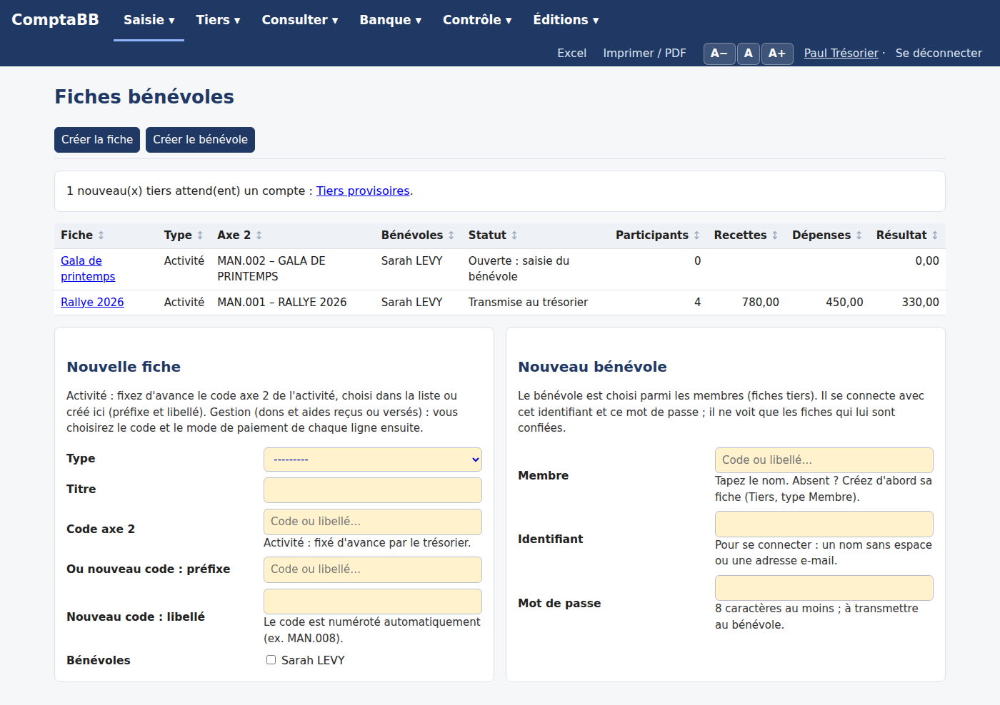
Liste des fiches avec leurs totaux ; nouvelle fiche et nouveau bénévole.
Le bénévole saisit
Il se connecte : il ne voit que ses fiches.
Pour chaque ligne : Recette ou Dépense, date, membre ou tiers (taper le nom), nombre de personnes, nature, montant, mode de paiement,
justificatif, remarque ; Ajouter la ligne en haut.
Un tiers absent de la liste : remplir « Nouveau tiers » (nom, prénom) : il est provisoire ; ou « Autre payeur ou bénéficiaire » pour une personne extérieure.
Quand c'est fini : Transmettre au trésorier (la fiche n'est plus modifiable par les bénévoles).
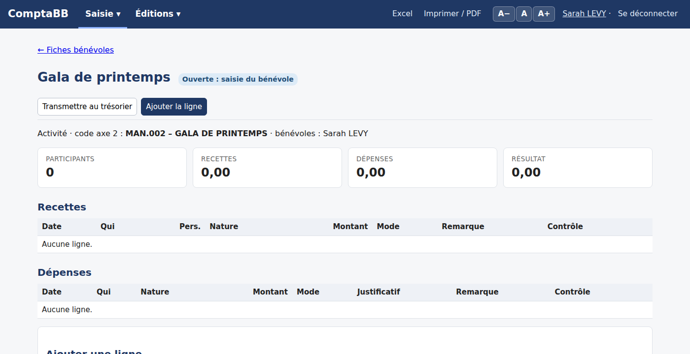
Ce que voit une bénévole.
Le trésorier complète et reporte
Tiers › Tiers provisoires : rattacher chaque nouveau tiers à un compte existant, ou laisser vide et choisir le type pour créer son compte.
Fiche Gestion : pour chaque ligne (Modifier), choisir le mode de paiement, le compte de contrepartie et le code axe 2.
Reporter en comptabilité : un mouvement par ligne. Refusé tant qu'une ligne est signalée dans la colonne Contrôle ; les lignes reportées sont verrouillées.
Rouvrir aux bénévoles pour qu'ils ajoutent des lignes.
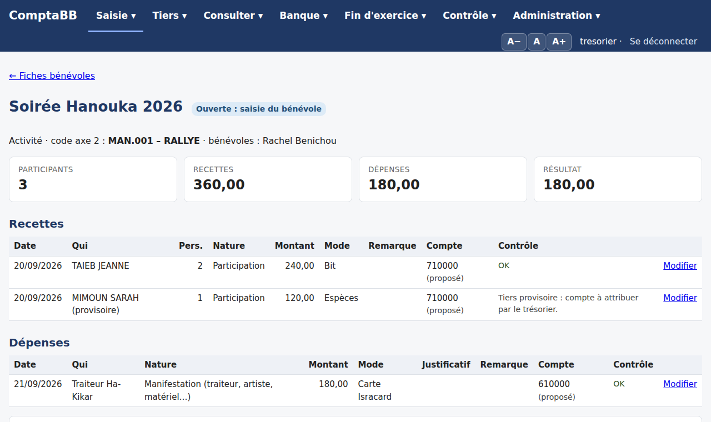
Fiche vue par le trésorier : une ligne à corriger (tiers provisoire) bloque le report.
8. Consulter
Tableau de bord
Produits, charges, résultat, trésorerie par compte, état des contrôles, résultat par activité (axe 1) et par événement (axe 2), sur la période choisie (Du / Au).
Écritures
Toutes les lignes, filtrées par période, journal, compte, code axe 2 ou texte. Tri par colonne sur toutes les pages.
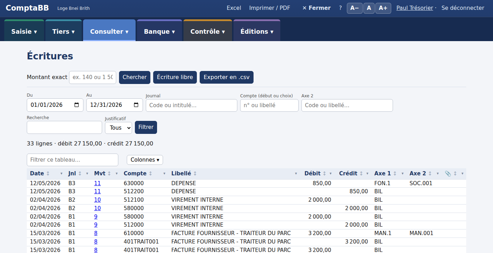
Écritures.
Journaux (banque, caisse…)
Consulter › Journaux : choisir le journal et la période ; en haut, Télécharger en Excel et Imprimer.
Autres journaux (VT, HA, OD, AN) : écritures par mouvement avec totaux.
Journal de la banque Mizrahi avec solde progressif.
Grand livre, balance, analytique
Grand livre : un compte, ses lignes et son solde cumulé.
Balance : chaque compte avec débit, crédit et solde ; clic sur un compte = son grand livre.
Analytique : produits, charges et résultat par code d'axe 1 et d'axe 2.
9. Banque : relevés à passer en comptabilité
Banque › Relevés à passer en compta : un onglet par compte (B1, B2, B3, caisse). La page ne montre que les
lignes téléchargées qui n'ont pas encore d'écriture. Boutons en haut : Créer les écritures, Télécharger le relevé choisi.
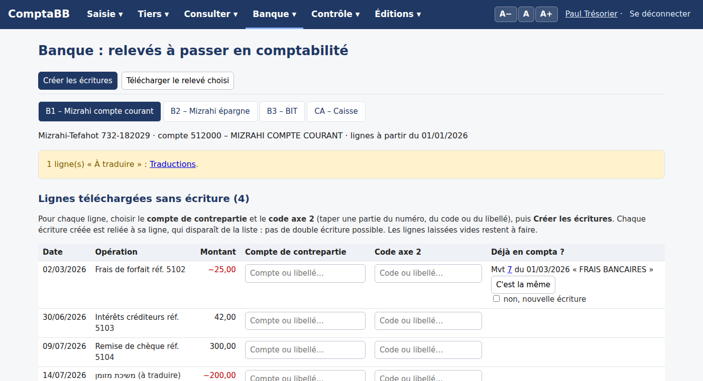
Quatre lignes à passer ; la première existe peut-être déjà en comptabilité.
1. Télécharger le relevé
Dans la carte « Télécharger un relevé » : choisir le fichier (PDF Mizrahi en hébreu, Excel ou CSV), puis Télécharger le relevé choisi en haut.
Les lignes déjà téléchargées sont ignorées : on peut reprendre un relevé qui chevauche le précédent, sans doublon.
2. Traduire les opérations
Les lignes en hébreu marquées « à traduire » : Banque › Traductions du relevé, saisir la traduction française puis
Enregistrer les traductions. Elle sert ensuite de libellé d'écriture, pour tous les relevés.
3. Affecter et créer les écritures
Pour chaque ligne, choisir le compte de contrepartie et le code axe 2 dans les listes : taper une partie du numéro, du code ou du libellé.
Créer les écritures : une écriture par ligne affectée (banque / contrepartie, même code axe 2, libellé = traduction), datée du jour du relevé.
Les lignes laissées vides restent à faire.
Pas de doublon. Une ligne qui a son écriture disparaît de la liste et ne peut plus en recevoir d'autre (même en cas de double clic).
Si la comptabilité contient déjà une écriture de même montant à une date proche (saisie, fiche bénévole…), elle s'affiche dans « Déjà en compta ? » :
C'est la même relie la ligne à cette écriture sans en créer ; sinon cocher « non, nouvelle écriture ».
10. Éditions : états, budget, exports des référentiels, documents
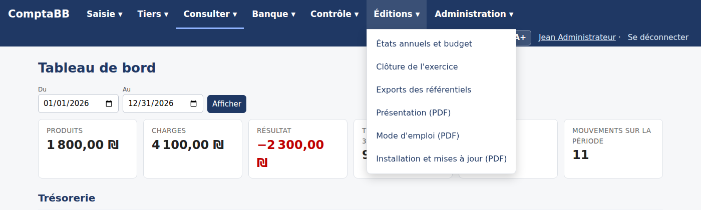
Le menu Éditions.
États annuels et budget
Éditions › États annuels et budget : choisir l'exercice ; comparaison automatique avec l'exercice précédent.
En haut : Télécharger en Excel (toutes les feuilles), Imprimer, Ajouter la ligne de budget.
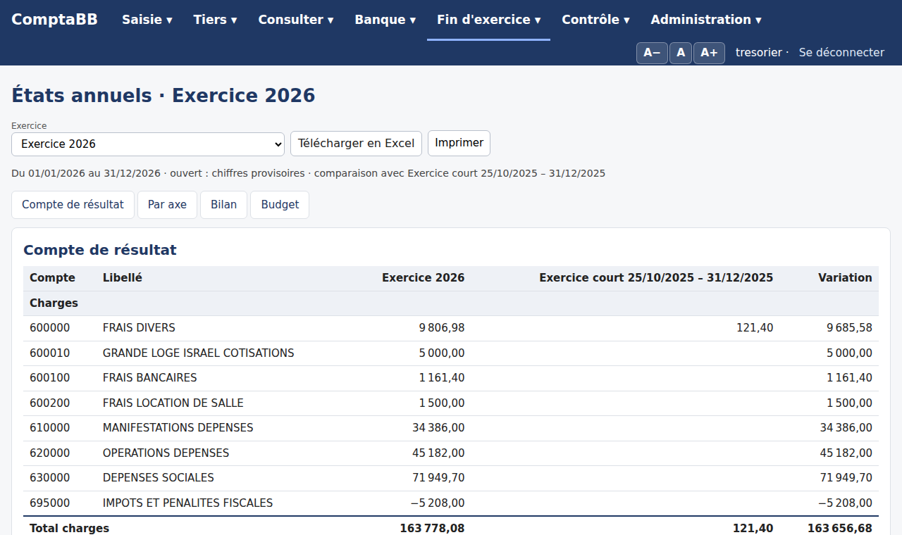
Compte de résultat N et N-1.
Compte de résultat par compte (charges, produits, résultat, variation) ; résultat par axe 1 et par axe 2.
Bilan simplifié : actif et passif (classes 1 à 5), résultat de l'exercice.
Budget : lignes de charges ou de produits, par compte, code d'axe 1 ou d'axe 2 ; comparaison budget / réalisé (écart et %).
Exports des référentiels
Éditions › Exports des référentiels (administrateur et trésorier) : un fichier Excel par référentiel — réglages, axe 1,
axe 2, préfixes, plan comptable, journaux, types de tiers, moyens de paiement, schémas et modèles d'opération, natures et modes des fiches,
paramètres des relevés, traductions, exercices, tiers et, pour l'administrateur, utilisateurs (sans mot de passe). Tout exporter
(Parametres.xlsx) en haut donne le classeur complet des paramètres. Chaque fichier est téléchargé et copié dans le dossier Exports ;
ceux des paramètres se réimportent tels quels (chapitre 13).
Présentation et mode d'emploi
Éditions › Présentation (PDF) et Éditions › Mode d'emploi (PDF) ouvrent ces documents.
Ils sont livrés avec l'application : chaque mise à jour apporte leur version à jour.
11. Clôture de l'exercice
Éditions › Clôture de l'exercice (trésorier). À faire une fois l'exercice terminé et vérifié.
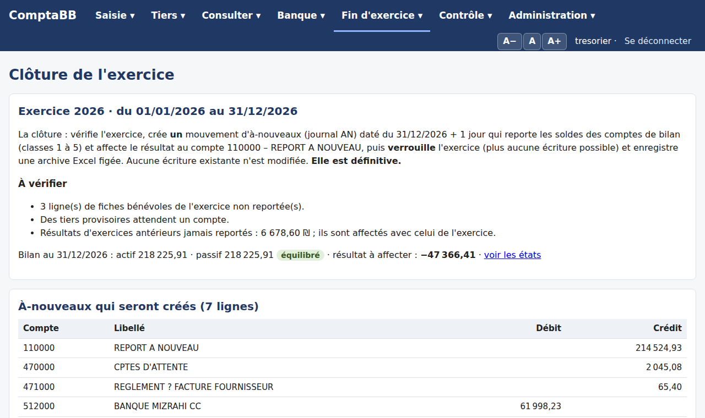
Aperçu de la clôture : contrôles et à-nouveaux prévus.
Lire les points bloquants (mouvement déséquilibré, bilan déséquilibré, exercice précédent non clos) et les points à vérifier
(contrôles, fiches non reportées, tiers provisoires).
Vérifier les états et faire une sauvegarde.
Choisir le code axe 2 des à-nouveaux, cocher la confirmation, Clôturer l'exercice en haut.
La clôture crée un mouvement d'à-nouveaux (journal AN) au 1er jour de l'exercice suivant : soldes des comptes de bilan et résultat affecté au compte 110000.
Elle crée l'exercice suivant si besoin, verrouille l'exercice clos et enregistre une archive Excel figée. Aucune écriture existante n'est modifiée.
La clôture est définitive. Une erreur découverte ensuite se corrige dans l'exercice ouvert (écriture libre).
12. Contrôles et historique
Contrôles
Contrôle › Contrôles : règles vérifiées en permanence (mouvements équilibrés, un débit OU un crédit par ligne, comptes et codes existants,
aucune écriture nouvelle dans un exercice clos, comptes de liaison 580000 et 470000). L'état général apparaît aussi sur le tableau de bord.
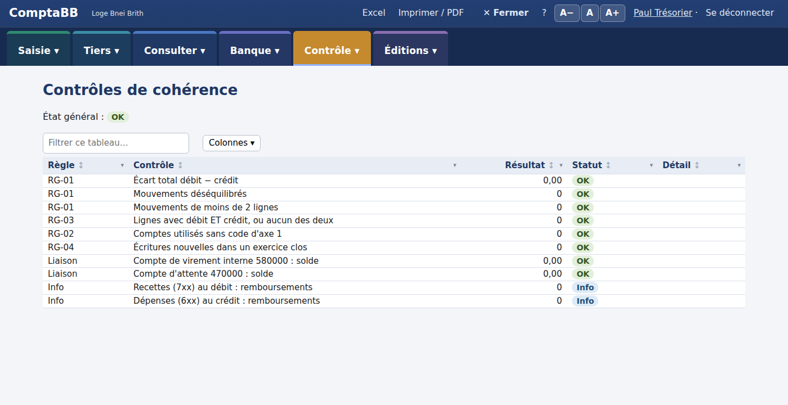
Page des contrôles.
Historique
Contrôle › Historique : toutes les actions (qui, quand, quoi, avant, après). Recherche ; Télécharger en Excel en haut.
C'est la piste d'audit du vérificateur aux comptes. L'administrateur peut effacer l'historique jusqu'à une date (taper EFFACER) : une copie Excel et une
sauvegarde sont faites avant, et une ligne garde la trace de l'effacement.
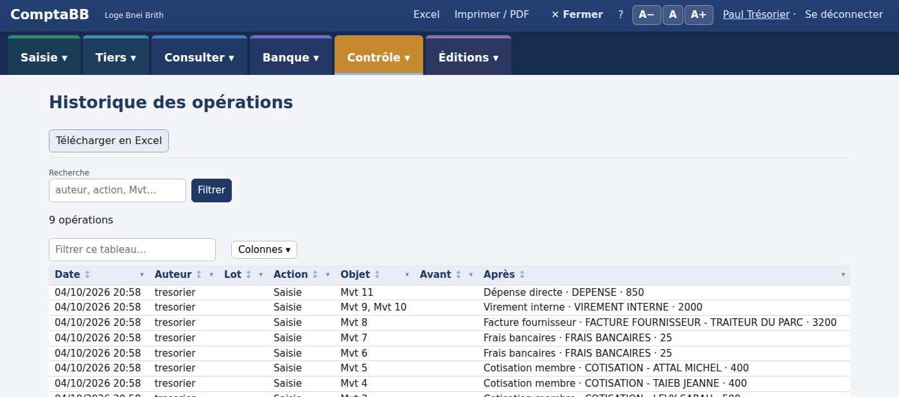
Historique des opérations.
13. Administration
Menu réservé à l'administrateur.
Utilisateurs
Administration › Utilisateurs : la liste des comptes (identifiant, nom, e-mail, rôle, actif, dernière connexion).
Nouvel utilisateur : identifiant (nom ou e-mail), prénom, nom, e-mail, rôle (Administrateur, Trésorier, Bureau), mot de passe à lui transmettre ;
Créer l'utilisateur en haut. Un bénévole se crée depuis les fiches bénévoles (chapitre 7).
Clic sur un identifiant : changer l'identifiant, l'e-mail, le rôle, bloquer la connexion (« Peut se connecter » décoché) ou donner un nouveau mot de passe.
Il reste toujours au moins un administrateur actif.
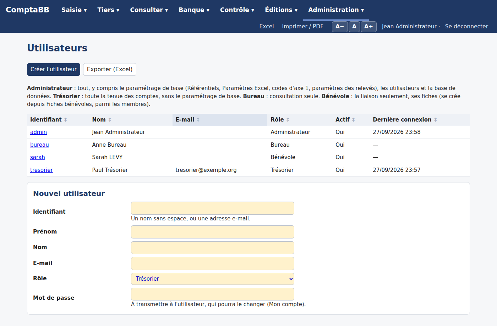
Utilisateurs et rôles.
Référentiels
Administration › Référentiels : plan comptable, journaux, codes analytiques, préfixes, exercices, réglages, modèles d'opérations,
moyens de paiement, types de tiers, natures et modes des fiches bénévoles, traductions. Cliquer sur une ligne, modifier, Enregistrer.
Les écritures ne se modifient pas ici (chapitre 4).
Paramètres (Excel)
Administration › Paramètres (Excel) : tous les paramètres tiennent dans un classeur Parametres.xlsx, une feuille par sujet.
Par le dossier Imports (PC) : Préparer Imports/Parametres.xlsx, le modifier dans Excel, l'enregistrer et le fermer, puis Importer Imports/Parametres.xlsx.
Par le navigateur (site) : l'exporter (Éditions › Exports des référentiels), le modifier, le choisir puis Importer le fichier envoyé.
Un fichier d'un seul référentiel s'importe de la même façon.
Une ligne dont la clé (colonne grise) existe est mise à jour ; une clé nouvelle est créée ; une cellule vide ne change rien ; rien n'est supprimé (Actif = Non pour retirer).
Au moindre problème, rien n'est enregistré et la liste des lignes à corriger s'affiche. Une sauvegarde est faite avant chaque import.
Imports / Exports
Administration › Imports / Exports : toutes les données s'échangent par fichiers .xlsx, un par nature
(Exercices, Reglages, Axe1, Axe2, Prefixes, PlanComptable, Journaux, Tiers, Traductions, Budget, Ecritures, Banque1, Banque2, Bit, Caisse),
de même structure à l'import et à l'export, décrits dans Lexique.xlsx. Boutons en haut : Tout exporter,
Tout exporter et sauvegarder la base, Enregistrer les dossiers, Tout réinjecter.
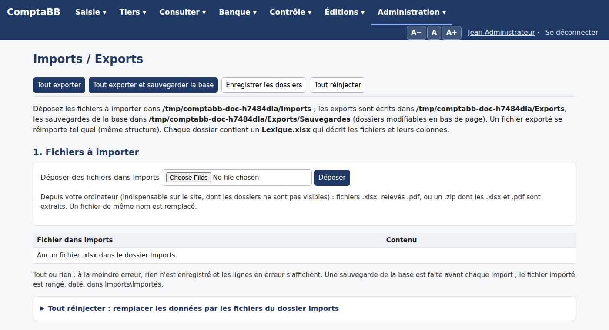
Imports / Exports.
Importer : déposer le fichier dans le dossier Imports (sur le site : bouton Déposer, qui accepte aussi un .zip) ; il apparaît dans la liste ; bouton Importer de sa ligne. Tout ou rien ;
le fichier importé est rangé, daté, dans Imports\Importés. Un relevé PDF Mizrahi se convertit d'abord en Banque1.xlsx ou Banque2.xlsx.
Tout exporter et sauvegarder la base : le jeu complet (un fichier par format, plus Parametres.xlsx) dans le dossier Exports, et une copie de la base dans le dossier Sauvegardes.
Les fichiers du dossier Exports se téléchargent depuis la liste de la page.
Tout réinjecter (taper REMPLACER) : les fichiers Ecritures, Banque1, Banque2, Bit, Caisse et Budget remplacent toutes les données de leur nature.
Les dossiers Imports, Exports et Sauvegardes
Ils se règlent en bas de la page Imports / Exports (ou dans Reglages.xlsx : clés dossier_imports, dossier_exports, dossier_sauvegardes).
Sur le PC de l'association : D:\OneDrive\Applications\ComptaBB\Exports et D:\OneDrive\Applications\ComptaBB\Exports\Sauvegardes.
Un chemin D:\… ne vaut que sur le PC : sur le site, il est ignoré (la page le signale) et les dossiers de comptabb-data servent ;
on télécharge alors les fichiers. Le dossier Exports contient aussi Archives (classeurs de clôture, historiques effacés) et les exports complets.
Base de données
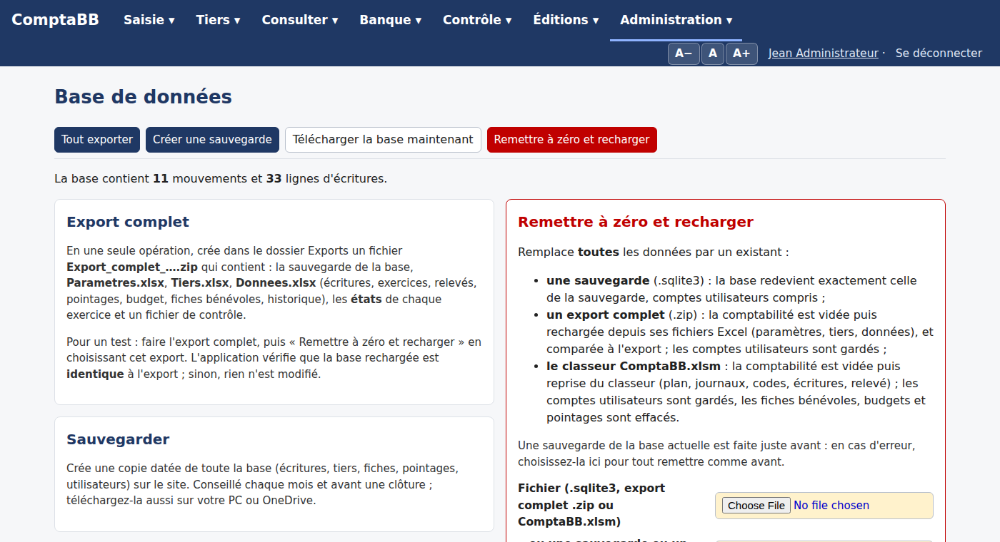
Sauvegardes, export complet et remise à zéro.
Tout exporter : un fichier Export_complet_….zip (base, Parametres.xlsx, Tiers.xlsx, Ecritures.xlsx, Donnees.xlsx, états de chaque exercice, contrôle).
Toutes les données y sont ; seuls les comptes utilisateurs ne sont que dans la base.
Créer une sauvegarde / Télécharger la base maintenant : copie complète ; à faire chaque mois et avant une clôture.
Remettre à zéro et recharger (taper REMPLACER) depuis une sauvegarde .sqlite3 (tout redevient comme à ce moment-là, utilisateurs compris),
un export complet .zip (rechargé puis contrôlé : au moindre écart, rien n'est modifié) ou le classeur ComptaBB.xlsm. Une sauvegarde est faite juste avant.
Corriger en masse puis recharger (site et PC) : Tout exporter, télécharger l'export, le décompresser, modifier dans Excel Ecritures.xlsx,
Tiers.xlsx, Parametres.xlsx ou Donnees.xlsx sans toucher aux en-têtes, recompresser le dossier (clic droit › Envoyer vers › Dossier compressé),
puis Remettre à zéro et recharger avec ce .zip en cochant Fichiers modifiés. Contrôles : Mvt équilibrés, débit OU crédit, codes existants ;
au moindre défaut, rien n'est modifié.
Recevoir la base du site (programme du PC seulement) : avec l'identifiant et le mot de passe d'un administrateur du site,
remplace la base du PC par une copie de celle du site, après une sauvegarde de la base du PC. Sens unique, du site vers le PC.
Faire un test sans risque : 1. Tout exporter ; 2. faire les essais voulus ; 3. Remettre à zéro et recharger depuis l'export complet.
14. Mises à jour, commandes, problèmes fréquents, glossaire
Mettre l'application à jour
Sur GitHub, dépôt ComptaBB, choisir la branche indiquée, Code › Download ZIP (sans renommer le fichier).
Sur PythonAnywhere, onglet Files › Upload a file.
Dans une console Bash : bash ~/maj.sh (sauvegarde de la base, nouveau code, bibliothèques, mise à niveau de la base, rechargement).
Ctrl+F5 sur une page de ComptaBB. En cas de problème : bash ~/maj.sh --retour remet la version précédente du code.
La présentation et ce mode d'emploi sont mis à jour en même temps (menu Éditions).
Commandes de la console (PythonAnywhere)
Se placer d'abord dans l'application : cd ~/ComptaBB/appli && source ~/venv/bin/activate && export COMPTABB_DATA=~/comptabb-data
Commande
Effet
python manage.py sauvegarder
Sauvegarde de la base (dossier Sauvegardes ; les 30 dernières sont gardées).
Remet la base dans l'état de la sauvegarde n° 3 de la liste (ou de la plus récente), après confirmation REMPLACER ; l'état actuel est sauvegardé juste avant.
python manage.py exporter_tout
Jeu complet d'exports et sauvegarde de la base, dans les dossiers paramétrés.
python manage.py reinjecter Export_complet_….zip
Remet à zéro et recharge un export complet, puis vérifie que tout est identique.
python manage.py creer_administrateur
Crée un compte administrateur (premier accès, ou secours).